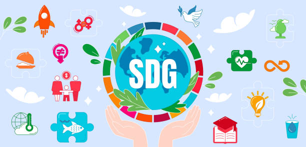
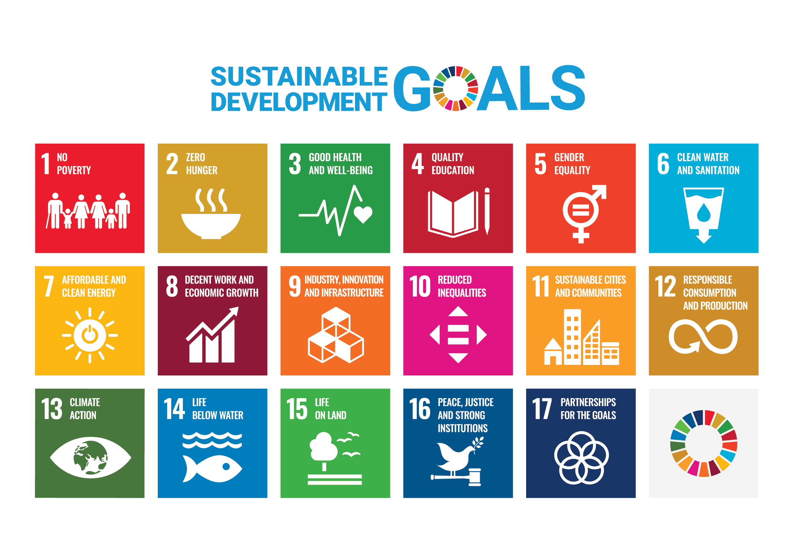
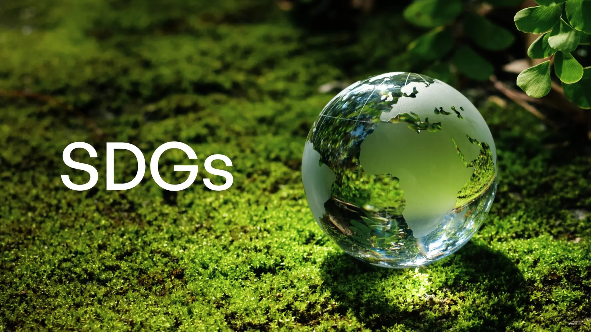
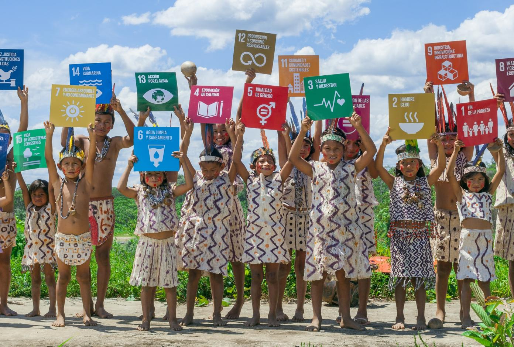

Welcome to the clarity of "Sustainable Development Goals"
   The 2030 Agenda for Sustainable Development, adopted by all United Nations Member States in 2015, provides a shared blueprint for peace and prosperity for people and the planet,
now and into the future. At its heart are the 17 Sustainable Development Goals (SDGs),
which are an urgent call for action by all countries - developed and developing - in a global partnership. They recognize that ending poverty and other deprivations
must go hand-in-hand with strategies that improve health and education, reduce inequality, and spur economic growth - all while tackling climate change and
working to preserve our oceans and forests.
The SDGs build on decades of work by countries and the UN, including the UN Department of Economic and Social Affairs.
In June 1992, at the Earth Summit in Rio de Janeiro, Brazil, more than 178 countries adopted Agenda 21, a comprehensive plan of action to build a global partnership for sustainable development to improve human lives and protect the environment.
Member States unanimously adopted the Millennium Declaration at the Millennium Summit in September 2000 at UN Headquarters in New York.
The Summit led to the elaboration of eight Millennium Development Goals (MDGs) to reduce extreme poverty by 2015.
The Johannesburg Declaration on Sustainable Development and the Plan of Implementation, adopted at the World Summit on Sustainable Development in South Africa in 2002, reaffirmed the global community's commitments to poverty eradication and the environment, and built on Agenda 21 and the Millennium Declaration by including more emphasis on multilateral partnerships.
At the United Nations Conference on Sustainable Development (Rio+20) in Rio de Janeiro, Brazil, in June 2012, Member States adopted the outcome document "The Future We Want" in which they decided, inter alia, to launch a process to develop a set of SDGs to build upon the MDGs and to establish the UN High-level Political Forum on Sustainable Development.
Rio +20 outcome also contained other measures for implementing sustainable development, including mandates for future programmes of work in development financing, small island developing states and more.
SDGs Icons. Downloads and guidelines.
(i)Download SDGs icons according to guidelines at the link provided on the
official website.
(ii)Please send inquiries to: